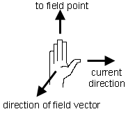

Prerequisites
Students should be somewhat familiar with the concept of a field and the right-hand rule for the direction of a magnetic field due to a current element, the concept of electric current, and the basic properties of vectors.
Learning Outcomes
Students will be able to apply the right-hand rule to determine the direction of the magnetic field due to a current loop, will be able to use the superposition principle to calculate the magnetic field due to several current loops, and will learn about the magnitude and direction of the magnetic field inside the Helmholtz coil configuration and inside a long solenoid.
Instructions
Students should know how the applet functions, as described in Help and ShowMe.
The applet should be open. The step-by-step instructions in the following text are to be done in the applet. You may need to toggle back and forth between instructions and applet if your screen space is limited.
 Laws
Laws
 Right-hand Rule for Magnetic
Field Direction
Right-hand Rule for Magnetic
Field Direction
 Superposition Principle
for Magnetic Fields
Superposition Principle
for Magnetic Fields
 Magnetic Field Due To A
Circular Current Loop
Magnetic Field Due To A
Circular Current Loop
 Magnetic Field Due To
Several Circular Current Loops
Magnetic Field Due To
Several Circular Current Loops
 Magnetic Field Due To
Current in a Solenoid
Magnetic Field Due To
Current in a Solenoid

The Biot-Savart law specifies both the magnitude and the direction of the magnetic field due to current in an infinitesimal wire segment. For this applet, we only need the part about the direction of the field.
The direction of the magnetic field vector is given by the following right-hand rule: point the thumb of the right hand in the direction of the current in the wire segment, point the outstretched fingers of the right hand from the segment axis towards P, and the palm of the right hand will be facing in the direction of the magnetic field vector. This is illustrated in Figure 1 below.
Figure 2
The current direction in this rule is the "conventional" one.

The total magnetic field vector  at
a field point P is the vector sum of the infinitesimal
magnetic field vectors d due
to all infinitesimal current-carrying wire segments.
at
a field point P is the vector sum of the infinitesimal
magnetic field vectors d due
to all infinitesimal current-carrying wire segments.
Comment. In the case of a magnetic field due to several current loops, the superposition principle can be used first to calculate the field due to a single loop. This calculation is difficult and will not be done here. The resulting expression for the magnetic field on the axis of a circular current loop will simply be stated. One can then use the superposition principle once more to calculate the field on the axis of more than one coaxial current loops.
Exercise 1. Reset  the applet.
the applet.
Select the Loops button, and select the loop at x = 0. Display the Grid to help you select the right loop. When done, hide the Grid again. Make sure the radius is set to a = 5.0 cm and the current to I = 5.0 A.
Use the applet to construct a pattern of magnetic field lines. Draw the pattern in your Notebook. At a few field points chosen to lie on the field lines, draw the magnetic field vectors. Set the scale factor to at least 200, or whatever value is sufficient to display the field vectors.
Exercise 2. The magnetic field vector at a
field point P due to a current loop is the superposition of
the infinitesimal field vectors d due to
the current in the infinitesimal wire sections around the
loop.
Use the right-hand rule described above to explain the directions of the field vectors observed in Exercise 1. Only a qualitative explanation is requested.
In particular, explain the direction of the magnetic field vectors on the axis of the loop, on both sides of the loop.
Exercise 3. Suppose a circular current loop has its axis (normal to the loop) the x-axis, has its center at x = 0, has radius a, and carries current I. The magnetic field due to this loop is the superposition of the infinitesimal fields due to the infinitesimal current segments around the loop. By doing the summation (integration), it can be shown that the magnitude B(x) of the magnetic field at a point on the axis of the loop is equal to
 B(x) = (m0/2) I a2 /
[a2 +
x2]3/2,
B(x) = (m0/2) I a2 /
[a2 +
x2]3/2,  m0 =
4p×10-7 T m
A-1.
m0 =
4p×10-7 T m
A-1. (1)
(1)
Use this equation to calculate the magnitude of the magnetic field at the center of the given loop, i.e., at x = 0, and at a point outside the loop, at x = a/2. Compare your results with the values given in the Data box of the applet.
Exercise 4. Continuing from Exercises 1 and 2, reverse the direction of the current by setting I to -5.0 A. Does the field line pattern change when the current direction is reversed? Do the field vectors change direction? Explain your observations in terms of the right-hand rule.
Exercise 1. Reset the applet. As in the preceding section, keep the radius of the loops at a = 5.0 cm and the current at I = 5.0 A.
Select the loop at x = 0 and a second loop at x = a = 5.0 cm. Since the loops are 1 cm apart, you will therefore select Loops 0 and 5.
A configuration like this with two coaxial circular loops of equal radius a a distance a apart is called a Helmholtz coil. Helmholtz coils have the convenient property that they produce an approximately uniform magnetic field between the two loops. This is an economical way of producing a nearly uniform field in the laboratory. Moreover, since there is a gap between the two loops, one can easily inspect any action taking place in the field between the coils.
Move the field point throughout the region between the two loops, and record the x and y components of the magnetic field vector at some typical points. Calculate the percentage variation in the field components at these field points. Make a diagram showing the field points at which you are observing the magnetic field vector.
Exercise 2. Continuing from Exercise 1, use the superposition principle and your result from Exercise 3 of the preceding section to calculate the magnitude BHelmholtz of the magnetic field vector on the axis of the Helmholtz coil midway between the loops.
To a good approximation, this should also be the magnitude of the field vector at other points between the two loops. (The direction of the field at these other points should be quite close to that at the midpoint as well, i.e., very nearly parallel to the axis.) Check this with the applet.
Answer. Verify that for a single current loop, with center at x = 0, Equ.(1) for x = ±a/2 reduces to
 B(±a/2) = (m0/2) (I / a)
1.25-1.5.
B(±a/2) = (m0/2) (I / a)
1.25-1.5. (2)
(2)
What will be the magnitude of the magnetic field at x = a/2 due to current loop whose center is located at x = a if the loop carries the same current I? Explain your reasoning.
Now use the superposition principle to find the magnitude BHelmholtz of the magnetic field at the midpoint x = a/2 of the Helmholtz coil defined in Exercise 1. Derive the following expression for BHelmholtz in terms of I and a:
 BHelmholtz =
8.99×10-7 I / a .
BHelmholtz =
8.99×10-7 I / a . (3)
(3)
Substituting the given values into Expression (3) yields
 BHelmholtz =
8.99×10-7×5.0 / 0.05 =
899×10-7 T.
BHelmholtz =
8.99×10-7×5.0 / 0.05 =
899×10-7 T. (4)
(4)
This value agrees with that displayed in the Data box of the applet.
Exercise 3. Redo the calculation done in Exercise 2 for a Helmholtz coil with a different radius and a different current. Construct the coil with the applet and compare your value for the magnitude of the field vector at the midpoint of the coil with that given by the applet.
Exercise 1. Reset the applet. As in the preceding sections, keep the radius at 5.0 cm and the current at 5.0 A. Keep all 21 loops selected. This way the series of loops approximates a solenoid. (A real solenoid its windings closer together and there are more of them.) In the following, the series of 21 coaxial loops will be referred to as a solenoid.
Explore the region in the center of the solenoid that is not too close to the ends of the solenoid by dragging the field point within this region. Also, let the applet draw some field lines through field points in the central region.
Describe your observations, and make a drawing showing some field lines through the central region and some field vectors at points in the central region. Explain the direction of the field vectors in terms of the right-hand rule.
Exercise 2. Continuing from Exercise 1, make a drawing of the pattern of field lines outside the solenoid. Compare the magnitudes of the field vectors inside and outside the solenoid.
Exercise 3. Continuing from Exercise 2, select the
Loops button and then select all 21 loops. Display the Data
box with information on the 21 loops. Move the field point to
the origin, which is at the center of the solenoid. Calculate
the magnetic field vector at this field point by
summing the contributions from all 21 loops as given in
the Data box. Compare your result to that given in the
Data box.